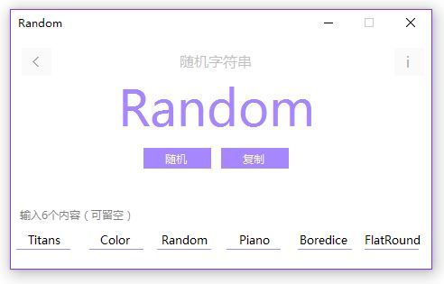
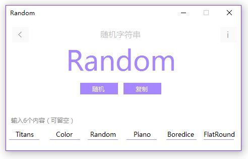

Boredice Random
这是一个随机工具，支持随机数和随机字符串，可以自定义随机区间和小数位数及自定义文本内容。（Win7/8/10）
Random原来是Titans里面的小工具，但程序稍大，所以分离了出来。功能就比较蹩脚了~随机数的用法很简单，就是在需要随机数时输入最小最大值，点击“随机”会在区间内随机5次，取最后一次的值（左图）。随机字符串也很简单，就是输入6个及以下的字符串，然后点击“随机”进行随机（右图）
 
